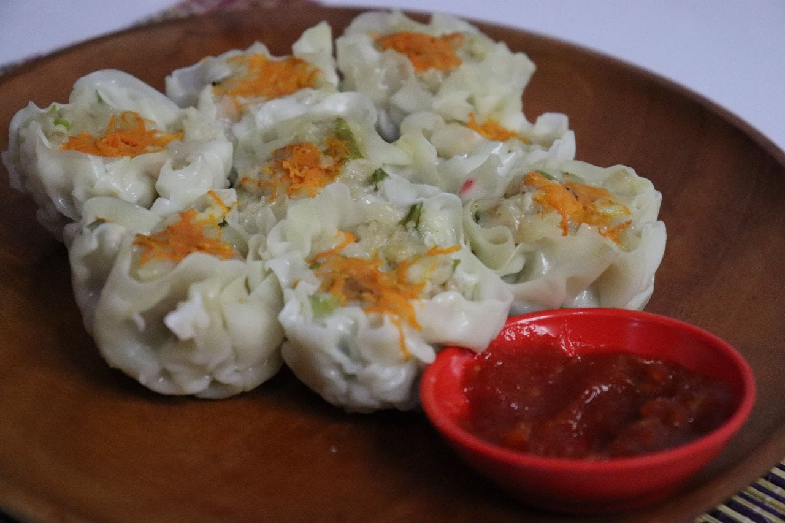

Best SellerSiomay Ayam Kukus
Terbuat dari daging ayam pilihan dengan tekstur kenyal dan lembut, disajikan hangat bersama saus istimewa.
Rp 3.500 / pcs
Pesan
Semua hidangan diracik langsung dari resep dapur Ibu dengan bahan baku segar, halal, dan higienis. Nikmati aneka camilan gurih, kue basah manis tradisional, hingga paket snack box praktis untuk berbagai acara.
Tersedia dalam kondisi siap santap hangat maupun kemasan beku (frozen) yang praktis digoreng sewaktu-waktu.
Informasi lengkap mengenai kategori sajian, kondisi penyajian, dan harga satuan resmi Cemal-Cemil-Chika.
| No | Nama Menu | Kategori | Kondisi Sajian | Min. Pemesanan | Harga Satuan | Aksi |
|---|---|---|---|---|---|---|
| 1 | Siomay Ayam Kukus | Menu Hangat | Kukus Hangat / Frozen | 5 pcs | Rp 3.500 | Pesan |
| 2 | Martabak Mie Telur | Gorengan Gurih | Goreng Hangat | 5 pcs | Rp 1.500 | Pesan |
| 3 | Sempol Ayam Balut Telur | Gurih Crispy | Goreng Hangat | 5 pcs | Rp 1.500 | Pesan |
| 4 | Cireng Isi Ayam Pedas | Pedas Gurih | Goreng Hangat / Frozen | 5 pcs | Rp 2.500 | Pesan |
| 5 | Cireng Ayam Suwir Gurih | Gurih Original | Goreng Hangat / Frozen | 5 pcs | Rp 2.500 | Pesan |
| 6 | Cireng Isi Keju | Keju Lumer | Goreng Hangat / Frozen | 5 pcs | Rp 2.500 | Pesan |
| 7 | Cireng Isi Usus Pedas | Pedas Gurih | Goreng Hangat / Frozen | 5 pcs | Rp 2.500 | Pesan |
| 8 | Pastel Ayam & Mie | Gorengan Klasik | Goreng Hangat / Frozen | 5 pcs | Rp 2.500 | Pesan |
| 9 | Risol Ragout Ayam | Creamy Gurih | Goreng Hangat / Frozen | 5 pcs | Rp 2.500 | Pesan |
| 10 | Tahu Walik Krispi | Gorengan Gurih | Goreng Hangat / Frozen | 5 pcs | Rp 2.000 | Pesan |
| 11 | Tahu Kocek Gurih | Menu Baru | Siap Santap Pedas | 1 porsi | Rp 5.000 | Pesan |
| 12 | Donat Cokelat Meses | Kue Manis | Siap Santap | 5 pcs | Rp 3.000 | Pesan |
| 13 | Donat Tabur Keju | Kue Manis | Siap Santap | 5 pcs | Rp 3.000 | Pesan |
| 14 | Donat Bomboloni | Isi Lumer | Siap Santap | 5 pcs | Rp 3.500 | Pesan |
| 15 | Kue Lumpur Kentang | Kue Tradisional | Siap Santap | 5 pcs | Rp 2.500 | Pesan |
Mau stok camilan di rumah untuk digoreng kapan saja? Kami menyediakan varian beku (*frozen*) siap goreng untuk cireng, pastel, tahu walik, dan siomay.
Pesan Versi FrozenIsi formulir pemesanan online sekarang atau hubungi admin kami untuk menyesuaikan isi paket snack box sesuai anggaran acara Anda!